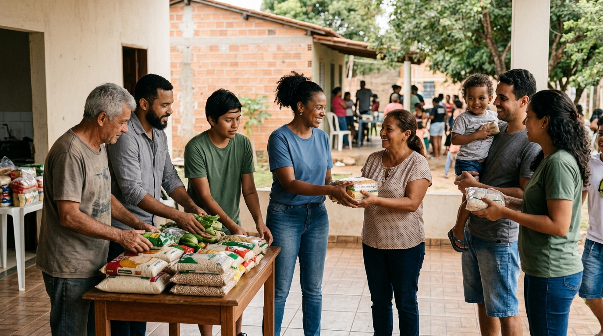

Quem somos

A ONG Esperança é uma organização do terceiro setor dedicada à promoção da solidariedade e ao desenvolvimento social. Nosso trabalho busca contribuir para uma sociedade mais justa por meio de projetos sociais e ações voluntárias.
Atuamos em parceria com voluntários, doadores e comunidades, desenvolvendo iniciativas que proporcionam apoio às pessoas em situação de vulnerabilidade.
Nossa missão
Promover ações sociais que contribuam para a melhoria da qualidade de vida das comunidades atendidas, incentivando a solidariedade, a cidadania e o voluntariado.
Entre em contato
Endereço: Rua da Solidariedade, 100 - Centro
Cidade: Caxias do Sul - RS
Telefone: (54) 99999-9999
E-mail: contato@ongesperanca.org.br